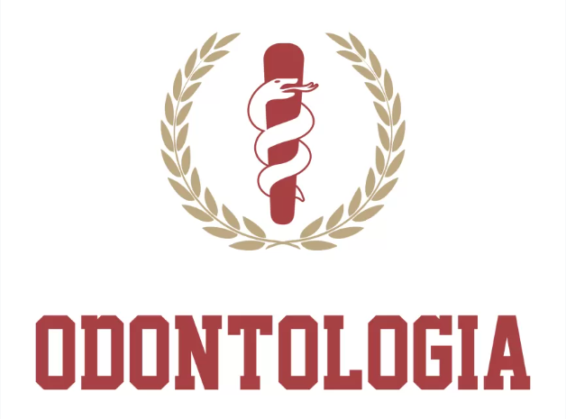

¡Bienvenido a mi blog!
Este es un espacio donde compartiré mis pensamientos, experiencias y conocimientos contigo.
Aquí tienes un breve resumen sobre la historia de la odontología:
La odontología, que se centra en el cuidado de la salud oral, tiene una larga historia que se remonta a civilizaciones antiguas. Se sabe que los egipcios y los mesopotámicos practicaban la odontología rudimentaria, con evidencia de tratamientos dentales que datan de hace miles de años. A lo largo de los siglos, la odontología ha evolucionado significativamente, desde técnicas primitivas hasta los avances modernos en la ciencia dental y la tecnología. Hoy en día, los odontólogos desempeñan un papel crucial en el mantenimiento de la salud bucal y la prevención de enfermedades dentales.
